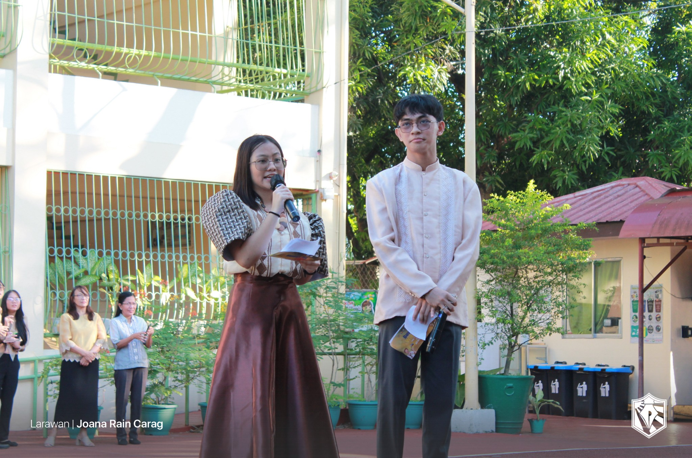
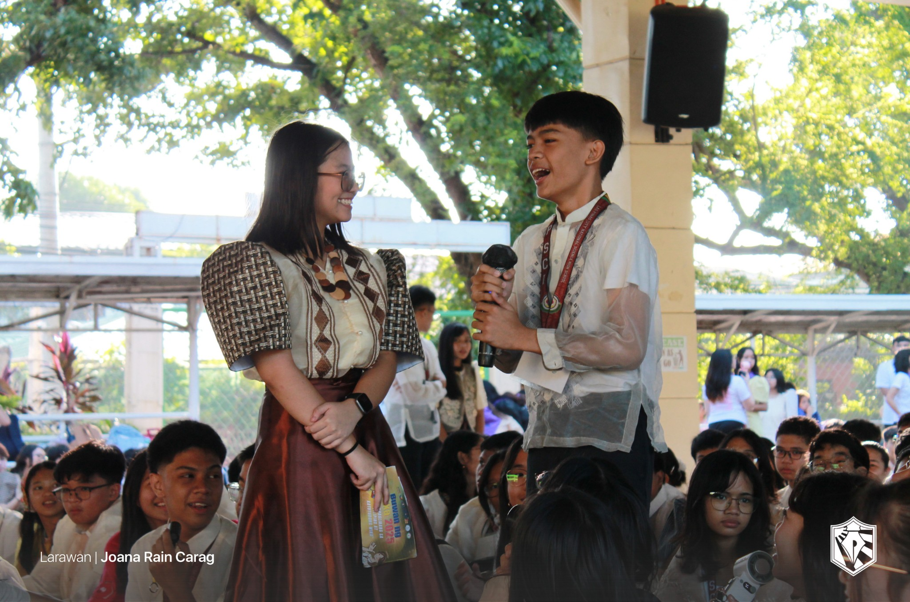
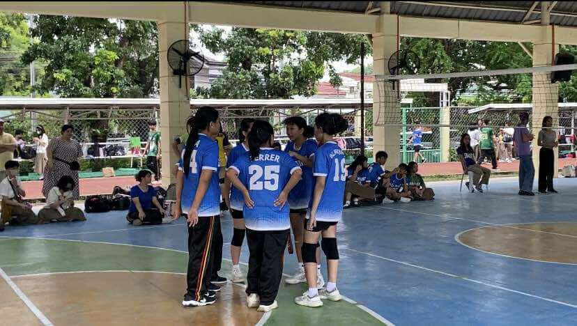
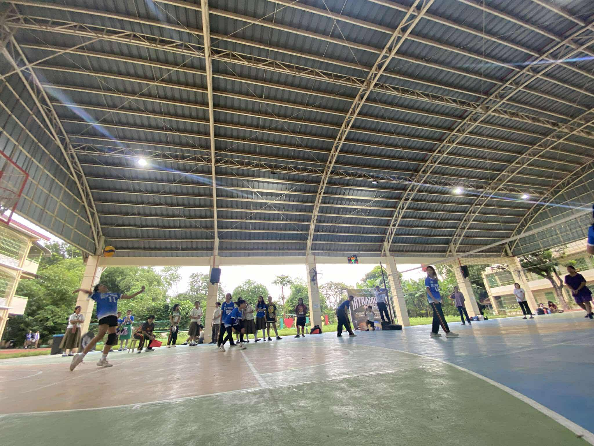
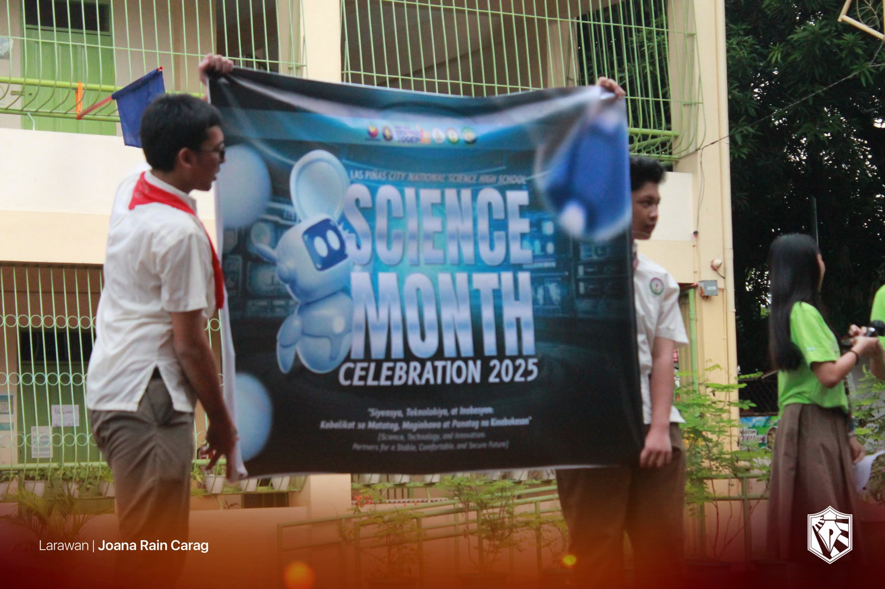
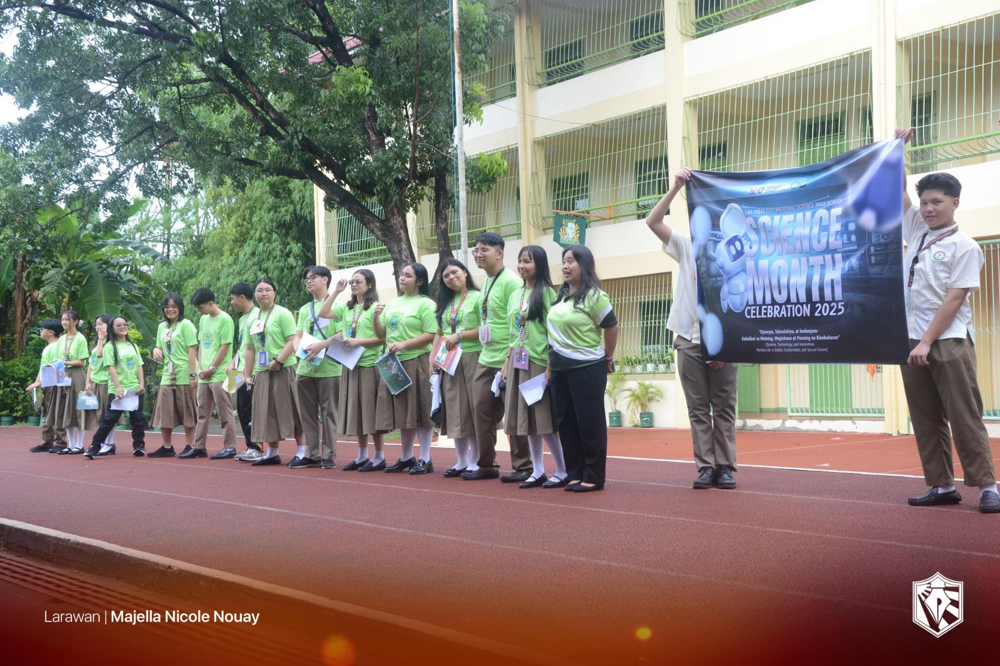
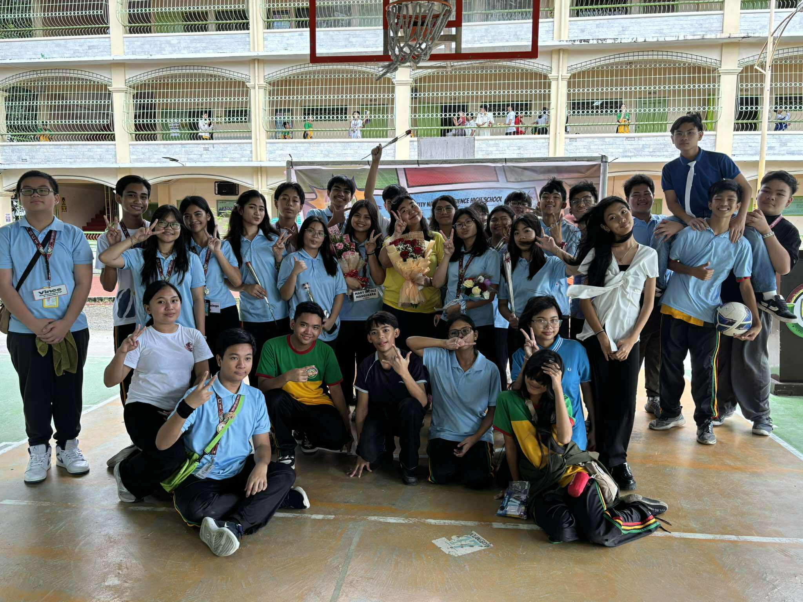
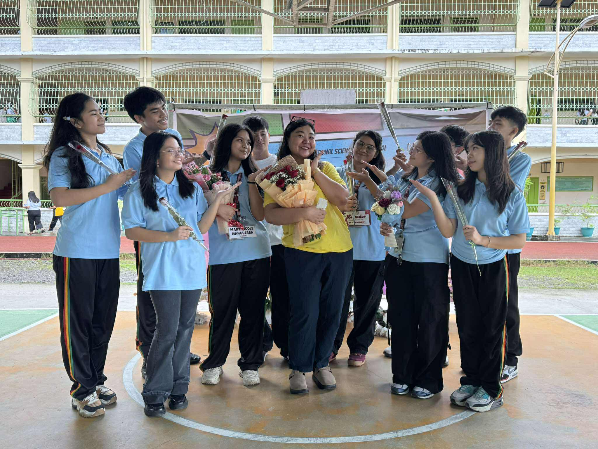
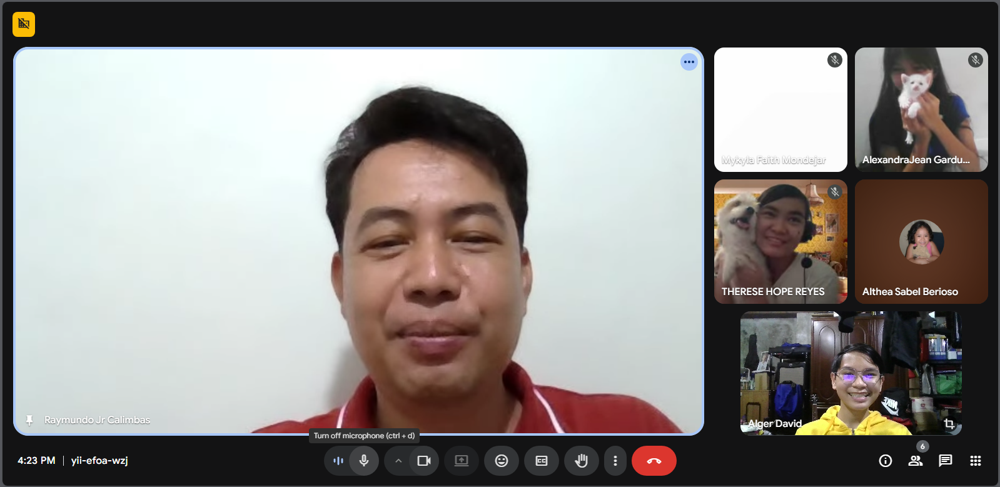

EVENTS
Buwan ng Wika


Reflection:I have not learned, but rather re-learnt the beauty of our fading traditions. I should do my part in keeping our pinoy traditions alive by being more fluent in filipino. I am glad to wear barong pilipino to flag ceremony to honor this month dedicated to our country. I tell you this, dear reader, participate more in buwan ng wika, because it is important to keep our traditions alive.
Intrams


Reflection:
Intrams has showed me the fun in sports, and taught me the value of enojying it. I can apply what I saw in intrams by practicing the sport out of pure exitement. Although I did not participate in the intrams activities, I did watch a few games, and it was fun. This event was a blast for me, and I'm sure for many others too. This event is important to show the sportsmanship of LPSCI, that we have brawns besides our brains.
Science


Reflection:
The thing I learned during this month is that we all need to learn how to defend projects we spend hours on. I should have applied this lesson when I went to do the Research Plan Defense, because that didn't go so well for my friend and I. If I were to explain to you how much I should have prepared to defend our research plan, I mean we really have to think about it. This event is definitely important to teach everyone how to defend not just concepts taught in school, but also their abstract ideas.
Teachers Day


Reflection:
I have learned that teachers deserve this day, and that they definitely appriciate being given this occasional celebration. I can apply this knowledge by being respectful and friendly towards them, and speak words of encouragement to them. I gave gifts to some of my teachers, and prayed they may find what they need during their day. If I were to explain this to a classmate, I would simply tell them to celebrate a year for our teachers who have taught thousands, and yet earn too little for their job. This day is important to show our appriciation to teachers all over the world, because they have raised all generations prior and will be the guiders for the future generations.
AP


>>
Reflection:
I have learned to always stay awake, for I missed the speech that my friend, Edward, gave during the seminar due to falling asleep. I can apply this lesson, everywhere actually. It is bad to fall asleep in places where I shouldn't. That being said, I should've participated more in the event by staying awake. If I were to explain this to a classamte of mine, I would tell you to check out my AP notebook portion of this webpage. This event is important to really solifidy that we have learned something in AP (which is generally one of the most important subjects)
(HUGE thanks to these kind people for letting me borrow their pictures and videos:
-David, Alger
-Hope, Therese
-Paguigan, Bela
These people are super cool)